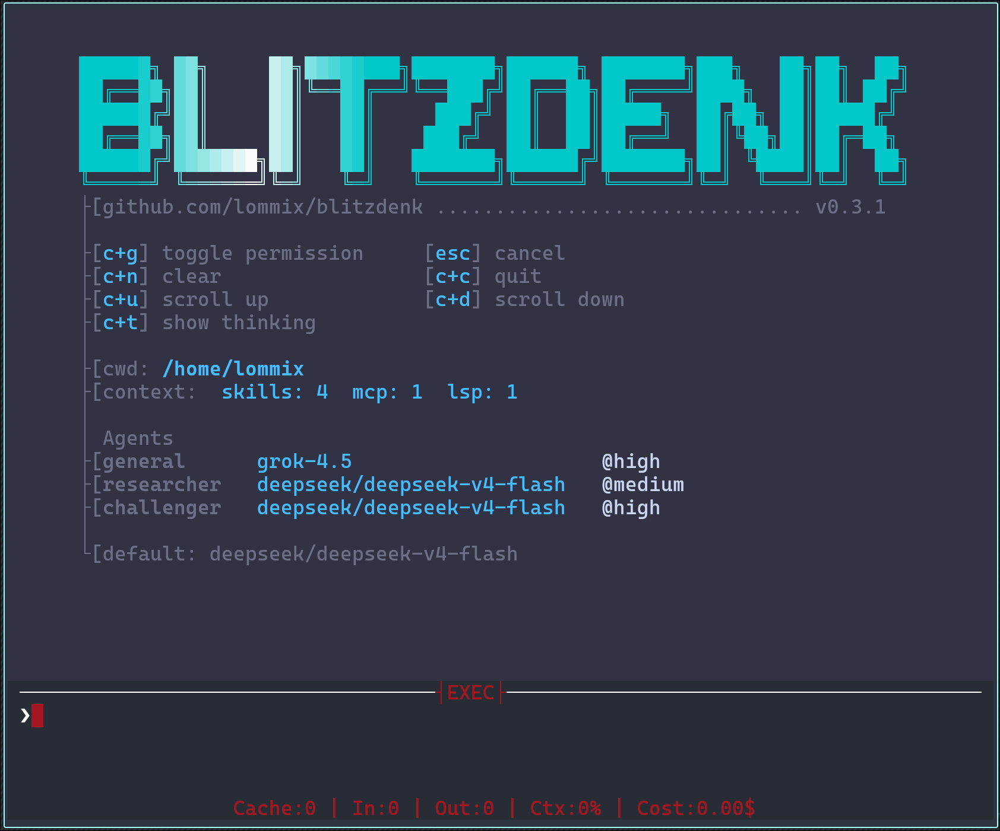

Blitzdenk is a coding and research harness for POSIX systems. It is configured and extended from Lua:
providers, models, tools, agents, modes, commands, keybinds, MCP servers, LSP servers, event listeners,
and status UI all live in
blitz.lua
.
The core stays small: a native Zig binary, vendored Lua, terminal UI, and a tool loop that can run local or remote work. The intended extension point is Lua, not patching Zig for every workflow.
~/.config/blitzdenk/blitz.lua
.
./blitz.lua
for workspace-specific behavior.
blitz.register_tool
.
:plan
,
:debug
,
/goal
, or
/swarm
.
lsp
tool.
Blitzdenk is usable, but still early. The stable part is the idea: keep the binary small and push workflow customization into Lua. The Lua API is the main interface and the generated meta file is the source of truth for function signatures and descriptions.
Known rough edges:
Blitzdenk targets Zig
0.16
and POSIX systems.
Download pre-built binaries from the release page:
https://github.com/Lommix/blitzdenk/releases
zig build --release=small
cp zig-out/bin/blitz ~/.local/bin/blitzblitz
blitz /path/to/project
blitz prompt "summarize this repository"
blitz help
The default command starts the TUI in the current directory. Passing a path starts it in that directory.
prompt
starts the TUI with initial input.
| Flag | Effect |
|---|---|
--log |
writes
.blitz/debug.log
in the working directory
|
--strict |
requests permissions instead of using the relaxed default |
On first run, Blitzdenk creates:
| File | Purpose |
|---|---|
~/.config/blitzdenk/blitz.lua |
user config loaded at startup |
~/.config/blitzdenk/meta.lua |
generated Lua type hints |
./blitz.lua |
optional project-local config, loaded when present |
The global config is where providers, tools, agents, keybinds, commands, MCP servers, and LSP servers
are configured. A project-local
blitz.lua
is useful for repository-specific prompts or tools.
Inside the TUI, use:
:ssh username@host:/path/to/cwd
SSH mode makes
read
,
write
,
edit
,
bash
,
patch
, and
ripgrep
operate against the remote target through the command layer.
exit_ssh
returns to local execution.
Lua config is loaded from
~/.config/blitzdenk/blitz.lua
and optionally from
./blitz.lua
.
The global API table is
blitz
.
The generated meta file is the source of truth for function signatures and descriptions:
~/.config/blitzdenk/meta.lua
src/blitz_defs.lua
Use that file in your editor for completion and inline docs. The website does not duplicate the full API list because it would drift.
local tools = require("tools")
local provider = blitz.add_provider({
type = "openai",
url = "https://api.openai.com/v1",
key_envar = "OPENAI_API_KEY",
})
blitz.set_model("gpt-5.4-mini", provider)
blitz.set_agent_tools(blitz.AGENT_GENERAL, {
blitz.tools.BASH,
blitz.tools.READ,
blitz.tools.WRITE,
blitz.tools.EDIT,
blitz.tools.RIPGREP,
tools.web_fetch,
tools.web_search,
})| Area |
What to look for in
meta.lua
|
|---|---|
| Providers |
blitz.add_provider
,
blitz.set_model
,
blitz.set_model_agent
|
| Tools |
blitz.register_tool
,
blitz.add_tool
,
blitz.set_agent_tools
,
blitz.tools
|
| Agents |
blitz.add_agent
,
blitz.AGENT_GENERAL
|
| Commands |
blitz.add_command
,
blitz.queue.*
|
| Keybinds | blitz.bind |
| Modes |
blitz.add_mode
,
blitz.set_mode
, mode prompt setters
|
| Events |
blitz.events.add_listener
,
blitz.events.*
|
| MCP |
blitz.mcp.add
,
blitz.mcp.enable
|
| LSP |
blitz.lsp.add
,
blitz.lsp.enable
|
| JSON and shell |
blitz.json.encode
,
blitz.json.decode
,
blitz.shell
|
| UI |
blitz.push_notification
,
blitz.status_bar_render
, flags
|
See Examples for real configuration snippets.
These snippets are copied from a live
~/.config/blitzdenk
setup and shortened only where needed.
local llama = blitz.add_provider({
type = "openai",
url = "http://127.0.0.1:8118",
key_envar = "",
temperature = 1,
})
local novita = blitz.add_provider({
type = "openai",
url = "https://api.novita.ai/openai/v1",
key_envar = "NOVITA_API_KEY",
temperature = 1,
})
local model = "deepseek/deepseek-v4-flash"
blitz.set_model(model, novita)
blitz.set_model_agent(blitz.AGENT_GENERAL, model, "max", novita)local tools = require("tools")
blitz.set_agent_tools(blitz.AGENT_GENERAL, {
blitz.tools.BASH,
blitz.tools.CANCEL_BACKGROUND,
blitz.tools.READ,
blitz.tools.WRITE,
blitz.tools.EDIT,
blitz.tools.ASK,
blitz.tools.AGENT,
blitz.tools.AWAIT_AGENT,
blitz.tools.CANCEL_AGENT,
blitz.tools.SEND_MESSAGE_TO_AGENT,
blitz.tools.RIPGREP,
blitz.tools.LOADSKILL,
blitz.tools.START_LSP,
blitz.tools.START_MCP,
})blitz.mcp.add({
name = "playwright",
command = "npx",
args = {
"-y",
"@playwright/mcp@latest",
"--browser=chromium",
"--executable-path=/usr/bin/chromium",
},
tools_prefix = "pw_",
})
blitz.lsp.add({
name = "zig",
command = "zls",
root = ".",
language_id = "zig",
args = {},
})A super simplified web fetch using an headless chromium and some unholy tricks.
M.web_fetch = blitz.register_tool({
name = "lua_webfetch",
description = "performs a web fetch and returns the content as markdown",
args = {
url = { type = "string", description = "the url to fetch", required = true },
},
func = function(ctx, call)
local url = call.arguments.url
if type(url) ~= "string" or url == "" then
return blitz.err("url is required")
end
ctx:set_status("fetch " .. url)
local content, ok = blitz.shell(
"chromium --headless=new --disable-gpu --no-sandbox "
.. "--disable-blink-features=AutomationControlled "
.. "--window-size=1920,1080 "
.. "--virtual-time-budget=5000 "
.. '--print-to-pdf=/dev/stdout --no-margins "'
.. url
.. '" | pdftotext - -'
)
if not ok or content == nil or content == "" then
return blitz.err("chromium returned no output")
end
return blitz.ok(content)
end,
})Websearch via local searXNG docker instance
M.web_search = blitz.register_tool({
name = "lua_web_search",
description = "Search the web via a local SearXNG instance",
args = {
searchQuery = { type = "string", description = "the search query", required = true },
max_results = { type = "number", description = "maximum results to return (default 10, max 20)" },
},
func = function(ctx, call)
local query = call.arguments.searchQuery
if type(query) ~= "string" or query == "" then
return blitz.err("searchQuery is required")
end
ctx:set_status("search " .. query)
local function urlencode(s)
s = (s:gsub("[%c]", " "))
return (s:gsub("([^%w%-_%.~])", function(c)
return string.format("%%%02X", string.byte(c))
end))
end
local search_url = "http://127.0.0.1:8080/search?q=" .. urlencode(query) .. "&format=json"
local body, ok = blitz.shell("curl -sS --max-time 15 '" .. search_url .. "'")
if not ok then
return blitz.err("searxng request failed")
end
local val, decoded = blitz.json.decode(body)
if decoded == false then
return blitz.err("failed to parse searxng json response")
end
local results = type(val) == "table" and val.results or nil
if type(results) ~= "table" or #results == 0 then
return blitz.ok("No results for: " .. query)
end
local max = tonumber(call.arguments.max_results) or 10
max = math.min(math.max(max, 1), math.min(20, #results))
local lines = { "Search results for: " .. query, "" }
for idx = 1, max do
local r = results[idx]
lines[#lines + 1] = string.format("[%d] %s", idx, r.title or "(no title)")
lines[#lines + 1] = " " .. (r.url or "")
lines[#lines + 1] = " " .. (r.content or "")
lines[#lines + 1] = ""
end
return blitz.ok(table.concat(lines, "\n"))
end,
})blitz.add_command(":plan", function(rem)
blitz.queue.reset_session()
blitz.queue.spawn_agent({
agent_type = blitz.AGENT_GENERAL,
prompt = [[
Before making ANY edits, explain your implementation plan to the user and await his go.
This is the request:
]] .. rem,
})
blitz.queue.push_chat_entry("user", "[PLAN]: " .. rem)
end)Goals are loops, which forces the agent to validate against the instruction before handing control back to the user. Simplified: An 'I completed the goal' tool, some additional instructions and an event listener with some shared state:
local goal_finished = false
local goal_tool = blitz.register_tool({
name = "goal_completed",
description = "Only call this tool, when your goal is completed",
args = {
goal_message = {
type = "string",
description = "Structured goal status report",
required = true,
},
},
func = function(ctx, call)
ctx:set_status("Goal completed!")
blitz.queue.push_chat_entry("agent", call.arguments.goal_message)
goal_finished = true
return blitz.exit_loop("Goaling completed!")
end,
})
blitz.add_command("/goal", function(prompt)
blitz.events.add_listener(blitz.events.AGENT_COMPLETE, function(agent_id)
if blitz.get_main_agent().index ~= agent_id.index then
return
end
if goal_finished then
return
end
blitz.queue.queue_agent_message(agent_id, [[
Your goal is unfinished. Validate the current state. If the goal is complete, call `goal_completed`.
Original goal instructions:
]] .. prompt
)
end)
blitz.add_tool(blitz.AGENT_GENERAL, goal_tool)
goal_finished = false
local main_agent_id = blitz.get_main_agent()
blitz.queue.push_chat_entry("user", "Goal: " .. prompt)
if main_agent_id ~= nil then
blitz.queue.queue_agent_message(main_agent_id, "Complete the goal: " .. prompt)
else
blitz.queue.spawn_agent({
prompt = "Complete the following goal and track progress in goal.md:\n" .. prompt,
tool_budget = 1024,
})
end
end)-- Quickly capture and pass through a screenshot
blitz.bind("<C-s>", function()
local png, ok = blitz.shell('grim -g "$(slurp)" -t png -')
if ok and png and #png > 0 then
blitz.queue.attach_screenshot(png, "image/png")
end
end)
-- Bind anything
blitz.bind("<C-t>", function()
local f = blitz.get_flags()
f.show_thinking = not f.show_thinking
blitz.set_flags(f)
end)
-- Overwrite statusbar render
blitz.status_bar_render = function()
local use = blitz.token_usage()
return "Cache:" .. use.cache
.. " | In:" .. use.input
.. " | Out:" .. use.output
.. " | Ctx:" .. math.floor(blitz.context_percent()) .. "%"
endblitz.add_command(":save", function()
blitz.queue.save_session(".blitz/blitz_save.json")
end)
blitz.add_command(":load", function()
blitz.queue.load_session(".blitz/blitz_save.json")
end)